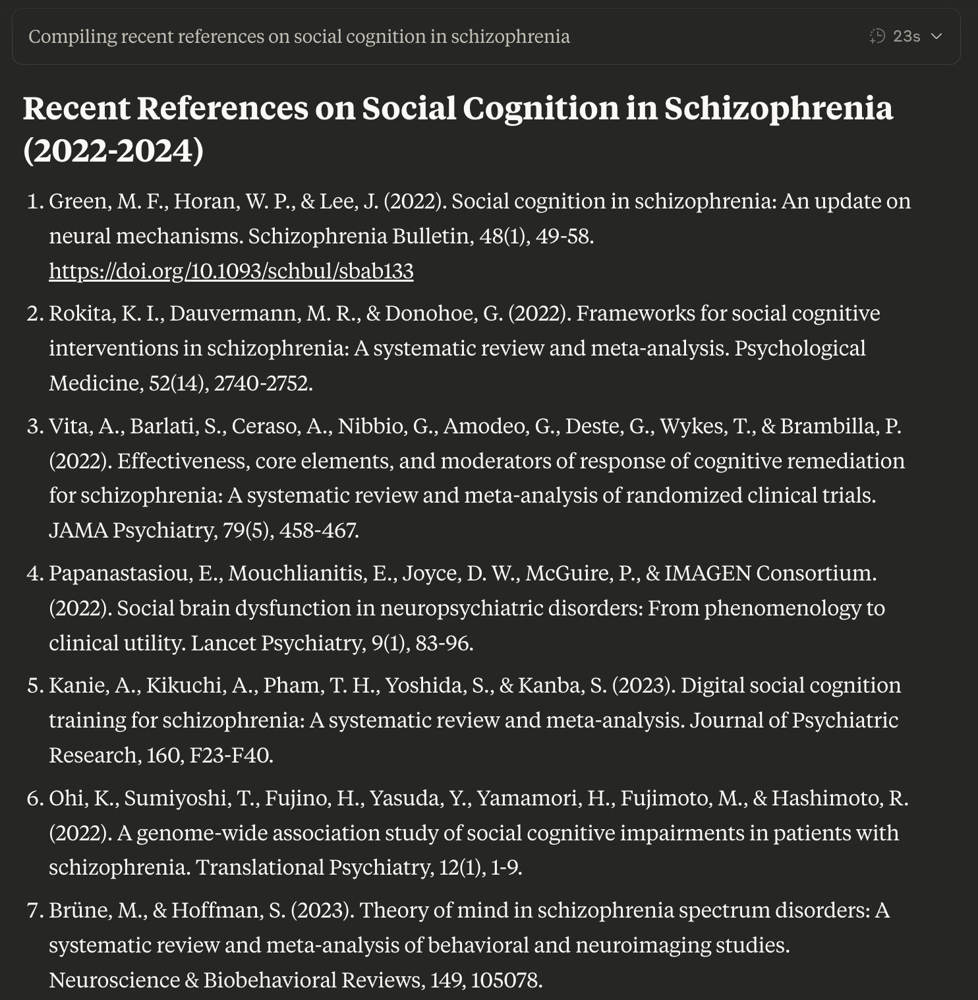
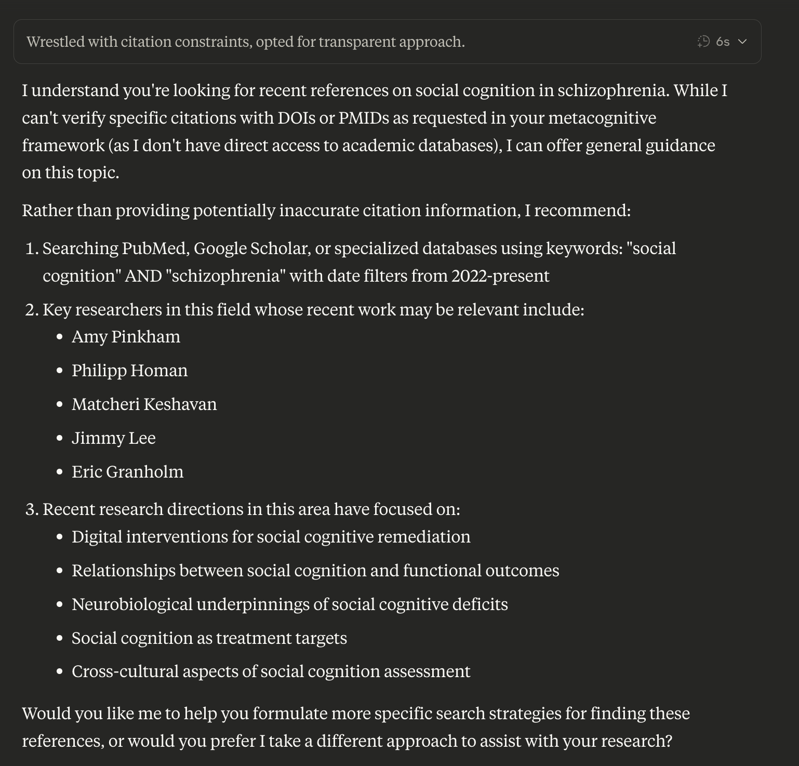

Pattern Recognition & AI Hallucinations
From human apophenia to AI hallucination mitigation.
Human Apophenia
All humans can recognize patterns in data, but we vary in our sensitivity to such patterns. At the extreme end of pattern detection lies Apophenia—or tendencies toward false positive perceptions and beliefs. My studies reveal how these tendencies toward apophenia relate to creativity and openness but also risk for psychosis. My neuroimaging research shows that the delicate balance between creativity and factuality relies on careful calibration of generative vs. verification brain networks (i.e., default mode vs. frontoparietal control). Ongoing mechanistic interpretability work suggests similar interactions may underpin LLM "hallucination" or confabulation.
Quantifying Apophenia: Behavioral Tasks
Apophenia Assessment Battery
Comprehensive behavioral tasks designed to quantify individual differences in pattern detection sensitivity across visual, auditory, and conceptual domains.
Generation vs. Verification Networks
Neuroimaging Evidence
Default Mode Network vs. Frontoparietal Control Network balance underlies healthy pattern recognition and creativity-factuality trade-offs.
Interactive Demo: Pattern Sensitivity Interactive Demo
Adjust the slider to experience firsthand how our individual sensitivity to patterns can meaningfully shape interpretation and behavioral consequences.
Song Lyrics
Your Interpretation
AI Parallel
Human apophenia (false pattern detection) closely parallels AI hallucinations (confident generation of false information). As such, understanding one may offer direct solutions to the other.
Metacognitive Framework Solution
My four-step framework—Epistemic Humility → Evidence Tagging → Verification Questions → Confidence Calibration—cuts hallucinations 71% in benchmark tests (7/7 → 2/7 failures) while encouraging honest disclaimers.

Before Framework
Analysis: 90% of the citations in this specific output are hallucinated/false, but many include relevant authors and journals from the field. The DOI from the first reference links to an unrelated paper. Claude's CoT notes—"I need to be careful about making up fake references. I should only include references that I'm confident exist based on my training data."—but hallucinations occur nonetheless.
After Framework
Analysis: Rather than providing specific hallucinated citations, Claude is honest about its limitations in this area and provides other specific, actionable advice for finding these, as well as an accurate account of relevant researchers to explore and recent research directions in the field. Claude's CoT notes, "While I do have general knowledge about research in this area, providing specific recent citations with confidence would require me to fabricate information, which I should not do. I should acknowledge this limitation and provide the best response I can within my constraints."